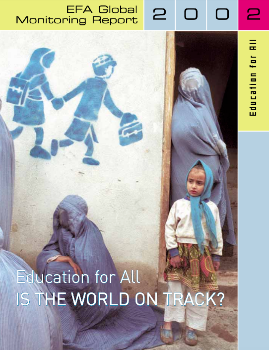
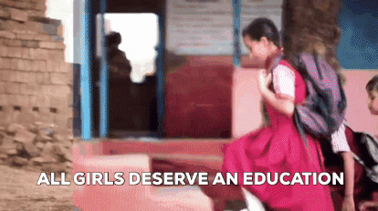
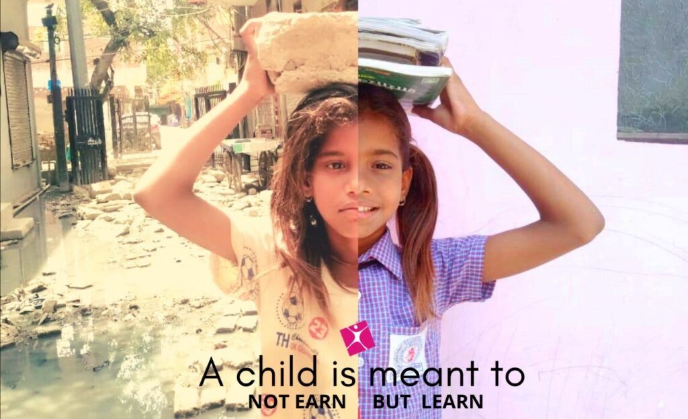
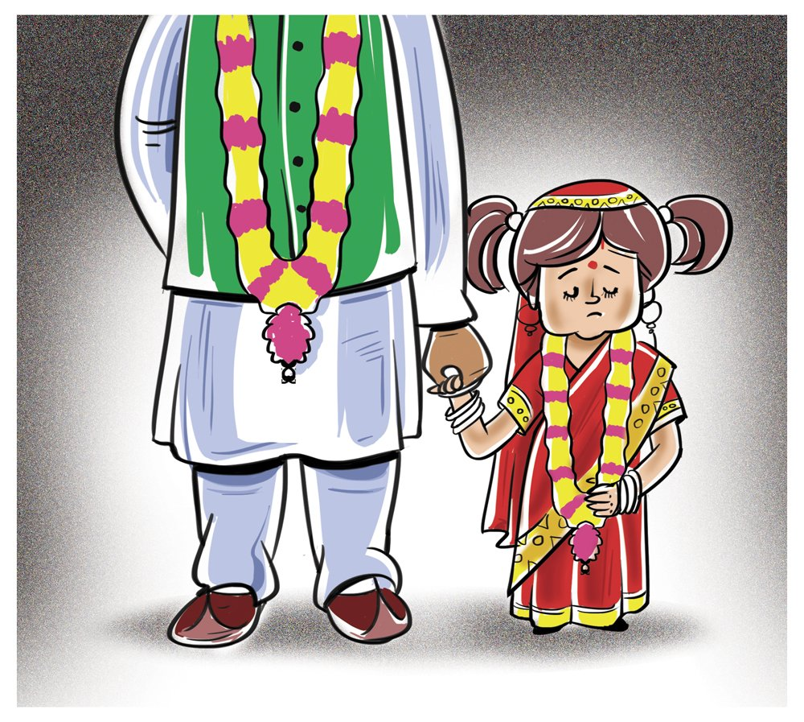

EDUCATION FOR ALL - IS THE WORLD ON TRACK
At the start of the new century, governments and the international community set targets to dramatically improve educational opportunities for children, youth and adults over the next 15 years. They underscored that education is vital to reducing world poverty and fostering a more equitable, peaceful and sustainable future.
Are they living up to their promises? The Education for All Global Monitoring Report, an annual independent publication, aims to hold the global community to account by rigorously assessing progress, analysing effective policies, spreading knowledge about good practice, and alerting the world to emerging challenges. The 2002 Report, "Is the World on Track," warns that "almost one-third of the world's population live in countries where achieving the Education for All goals will remain a dream unless a strong concerted effort is made.

Action report

COVID 19 LOCKDOWN - HOMESCHOOL
Durng the covid pandemic, many have lost their learning and education due to not having technology, many young people have been deprived of their education and it has had a negative impact
Especially on young women and girls.

WHAT ARE GIRLS CAPABLE OF GIVEN AN EDUCATION
WHAT ARE GIRLS CAPABLE OF GIVEN AN EDUCATION
Numerous studies have shown that girls education is one of the most cost-effective strategies for promoting development and economic growth.

CHILD LABOUR
CHILD LABOUR
In areas of the world with few restrictions on child labour, families often choose to send their daughters to work instead of school. Secondary school graduates can earn higher wages and contribute to their country’s economic growth.

EARLY MARRIAGE